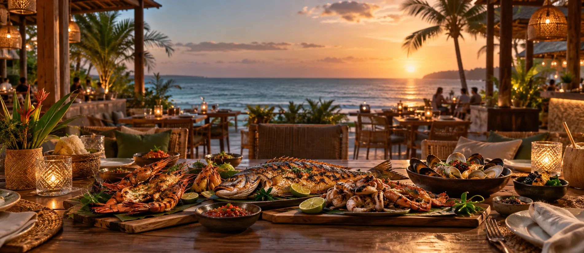
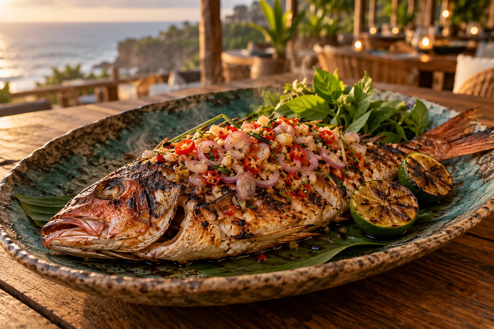
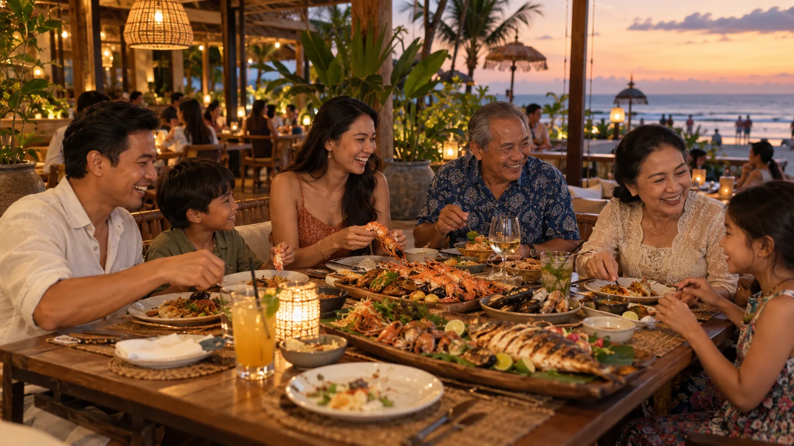
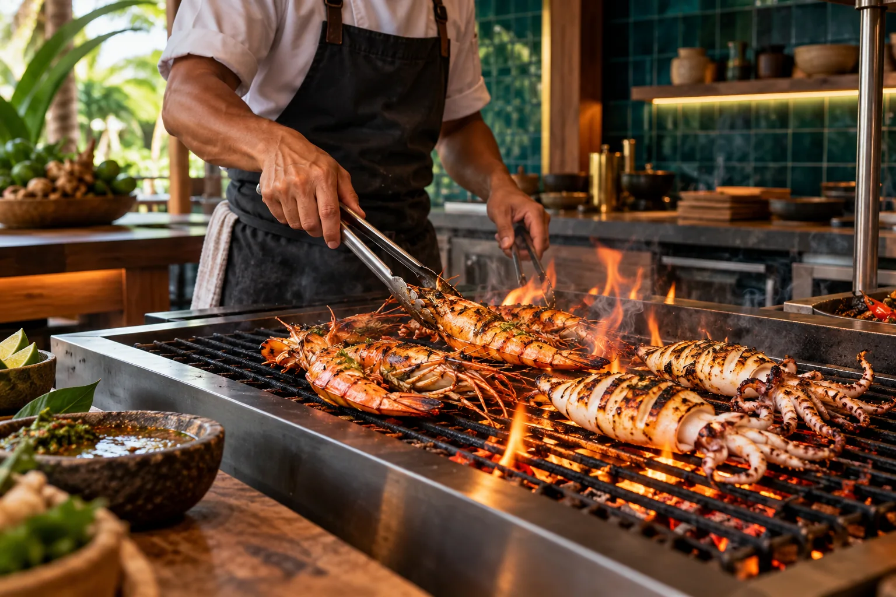
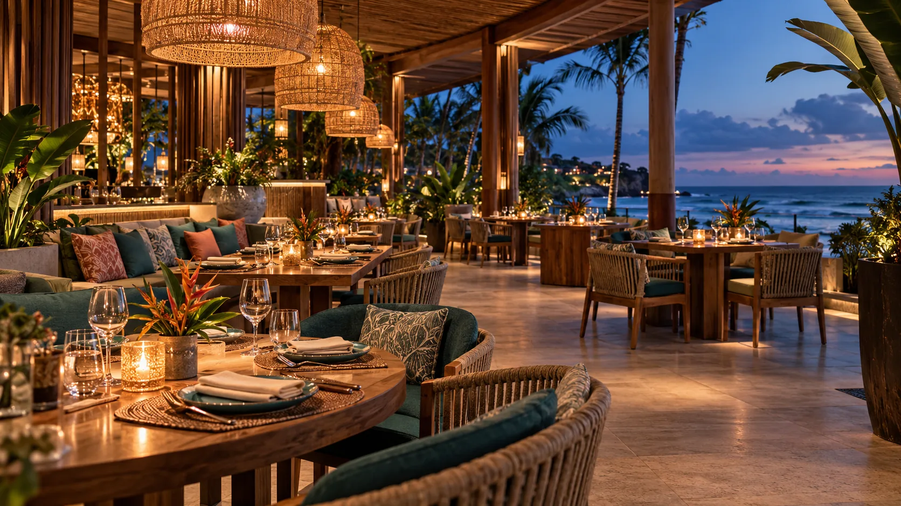
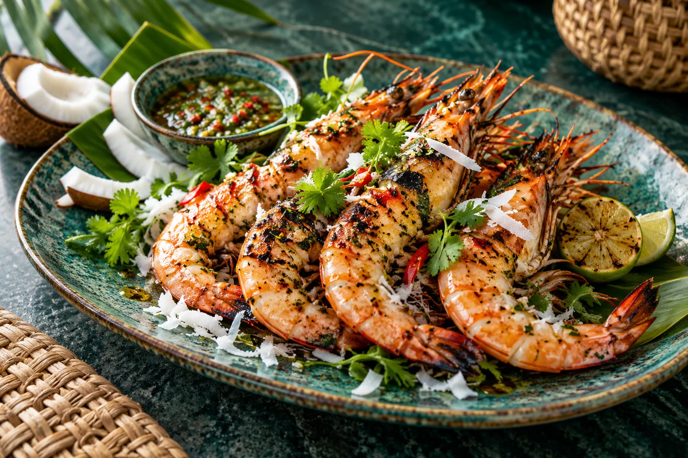

Ikan Bakar Pesisir
Rp89.000Ikan segar, sambal matah, dan nasi aromatik.

Seafood keluarga di Kuta, Bali
Seafood segar, bumbu Bali, dan meja panjang untuk waktu bersama keluarga.
Menu pilihan
Dipanggang saat dipesan, disajikan di tengah meja, dan dibuat ramah untuk seluruh keluarga.

Ikan segar, sambal matah, dan nasi aromatik.
Udang, cumi, kerang, dan ikan bakar untuk 2-3 orang.
Udang bakar dengan kelapa gurih dan jeruk limau.
Cumi renyah dengan sambal khas yang ramah keluarga.
Dapur Pesisir dibuat untuk makan siang santai, perayaan kecil, dan malam panjang bersama orang-orang terdekat.
Kenali Kami
Lihat kesegaran bahan, panas dapur terbuka, dan ruang makan yang menyambut.



Pesan melalui formulir atau hubungi kami langsung lewat WhatsApp.